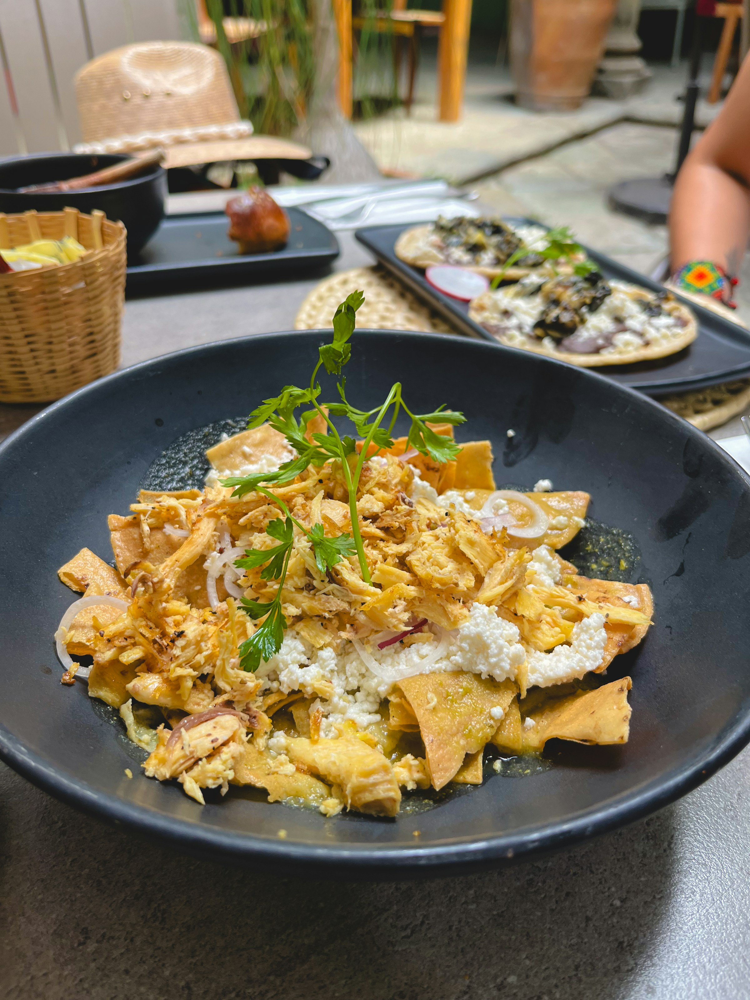

Chilaquiles

The word chilaquiles comes from the Nahuatl language, meaning chilis and greens. A traditional dish served in Mexico, the recipe hit the United States in 1898 when featured in The Spanish Cookbook, by Encarnación Pinedo.
At its most basic, chilaquiles consist of fried corn tortilla chips simmered in a brothy sauce. Not only is this dish affordable, but it's also great for entertaining since both major components (the chips and the sauce) can be made in advance.
Ingredients:
- Corn tortillas
- Garnishes
- Salsa
Steps to make chilaquiles:
- Fry the tortillas. Heat the oil in a large skillet over medium-high heat until shimmering. Add about a quarter of the tortilla wedges and cook, flipping once, until lightly brown and crisp.
- Drain the tortilla chips. Drain the freshly fried tortilla chips on a paper towel-lined baking sheet. Sprinkle lightly with salt. Repeat this process until all tortillas are fried, adding more oil if needed.
- Make the salsa roja. Place the tomatoes, onion, jalapeño, and garlic in a blender or food processor fitted with the blade attachment. Pour in a cup of the broth. Blend until smooth.
- Cook the salsa. Heat a couple teaspoons of oil in a large skillet over medium-high heat until shimmering. Add the salsa and cook, stirring occasionally, until slightly thickened. Add additional broth to thin out the salsa, if needed. Taste and season with salt as needed.
- Coat the chips with the salsa. Add the tortilla chips and stir carefully to coat the chips. Cook until the tortillas are heated through. Taste and season with salt as needed.
- Serve warm. Serve warm garnished with avocado or guacamole, crema, queso fresco, and/or fried eggs, if desired.
- Fry the tortillas. Heat the oil in a large skillet over medium-high heat until shimmering. Add about a quarter of the tortilla wedges and cook, flipping once, until lightly brown and crisp.
- Drain the tortilla chips. Drain the freshly fried tortilla chips on a paper towel-lined baking sheet. Sprinkle lightly with salt. Repeat this process until all tortillas are fried, adding more oil if needed.
- Make the salsa roja. Place the tomatoes, onion, jalapeño, and garlic in a blender or food processor fitted with the blade attachment. Pour in a cup of the broth. Blend until smooth.
- Cook the salsa. Heat a couple teaspoons of oil in a large skillet over medium-high heat until shimmering. Add the salsa and cook, stirring occasionally, until slightly thickened. Add additional broth to thin out the salsa, if needed. Taste and season with salt as needed.
- Coat the chips with the salsa. Add the tortilla chips and stir carefully to coat the chips. Cook until the tortillas are heated through. Taste and season with salt as needed.
- Serve warm. Serve warm garnished with avocado or guacamole, crema, queso fresco, and/or fried eggs, if desired.
Home